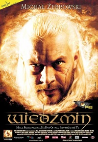
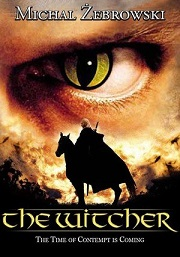
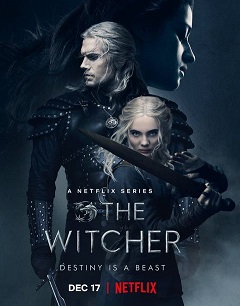

"Wiedźmin" (film 2001)
| Polski film fantasy z 2001 roku w reżyserii Marka Brodzkiego. Film jest adaptacją opowiadań o Wiedźminie polskiego pisarza fantasy, Andrzeja Sapkowskiego. Scenariusz napisał Michał Szczerbic. Rolę tytułową powierzono Michałowi Żebrowskiemu. Muzykę skomponował Grzegorz Ciechowski. Film został stworzony jako dodatkowy efekt prac nad serialem telewizyjnym, którego premiera miała miejsce jesienią 2002 roku. |  |
"Wiedźmin" (serial 2002)
|  | Wiedźmin – polski serial telewizyjny z gatunku fantasy emitowany od 22 września do 15 grudnia 2002 na antenie TVP2, oparty na serii opowiadań Andrzeja Sapkowskiego ze zbiorów Ostatnie życzenie i Miecz przeznaczenia. |
"Wiedźmin" (serial 2019)
| Amerykańsko-polski telewizyjny serial fantasy, stworzony przez Lauren S. Hissrich na podstawie książek Andrzeja Sapkowskiego o wiedźminie Geralcie. Ośmioodcinkowa pierwsza seria udostępniona została w całości 20 grudnia 2019 w serwisie Netflix. Drugi sezon serialu pojawił się 17 grudnia 2021. |  |
"Wiedźmin: Zmora Wilka"
{kind=link}
{kind=link}
{kind=link}
{kind=link}